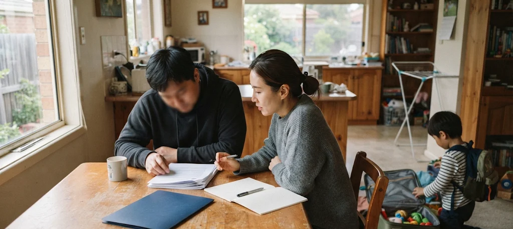

@aussie.umma
호주 국내, 시민권자인 아이 기준
호주 아이 여권,
무엇부터 준비할까요?
무엇부터 준비할까요?
서류·신원 보증인·동의 서명부터 확인해요.
출처: Australian Passport Office
Child passport
Child passport

AI로 만든 설명용 이미지예요.
실제 서류나 제출용 사진이 아니에요.
실제 서류나 제출용 사진이 아니에요.
@aussie.umma
온라인 작성 뒤에도 접수가 남아요
작성하면
끝일까요?
끝일까요?
신청서를 출력하고 서명을 확인한 뒤
접수 취급 우체국에 제출해요.
접수 취급 우체국에 제출해요.
출처: Australian Passport Office
Child passport
Child passport
@aussie.umma
출생증명서와 시민권 증빙은 달라요
출생증명서만으로
충분할까요?
충분할까요?
1986년 8월 20일 이후 호주 출생은
출생증명서만으로 시민권을 증명할 수 없어요.
출생증명서만으로 시민권을 증명할 수 없어요.
출처: Australian Passport Office
Australian citizenship
Australian citizenship
@aussie.umma
신청서와 사진 뒷면에 서명하는 역할
신원 보증인은
누구일까요?
누구일까요?
성인 호주 시민권자이며
아이를 알아온 기간과 관계 조건을 확인해요.
아이를 알아온 기간과 관계 조건을 확인해요.
출처: Australian Passport Office
Guarantors, referees and witnesses
Guarantors, referees and witnesses
@aussie.umma
동의 서명을 확인하는 사람
증인은
역할이 달라요
역할이 달라요
동의 서명 증인은 시민권이 필수는 아니지만
다른 조건은 충족해야 해요.
다른 조건은 충족해야 해요.
출처: Australian Passport Office
Parental consent
Parental consent
@aussie.umma
법적 부모책임이 있는 사람 기준
필요한 동의를
확인해요
확인해요
각 사람의 동의가 원칙이에요.
동의받기 어렵다면 별도 안내를 확인해요.
동의받기 어렵다면 별도 안내를 확인해요.
출처: Australian Passport Office
Parental consent
Parental consent
@aussie.umma
아이 사진 2장을 준비해요
사진은
보정하지 않아요
보정하지 않아요
촬영 6개월 미만 사진을 준비해요.
보호자 손이나 다른 사람은 나오면 안 돼요.
보호자 손이나 다른 사람은 나오면 안 돼요.
출처: Australian Passport Office
Passport photos
Passport photos
@aussie.umma
접수 후 일반 처리 안내 기준
최소 6주,
수령 보장은 아니에요
수령 보장은 아니에요
동의가 불완전한 신청은
더 오래 걸릴 수 있어요.
더 오래 걸릴 수 있어요.
출처: Australian Passport Office
Processing times
Processing times
@aussie.umma
접수 전에 한 번 더 확인해요
준비물 점검표
출생증명서 원본
시민권 증빙
사진 2장
보증인·동의 서명
접수자 신분증
출처: Australian Passport Office
Child passport, Consent, Photos
Child passport, Consent, Photos
@aussie.umma
호주 국내 시민권자 아이 신청 기준
저장하기 →
아이 여권을 준비할 때
공식 안내와 함께 다시 확인해요.
가족 상황에 따라 조건이 달라요.
공식 안내와 함께 다시 확인해요.
가족 상황에 따라 조건이 달라요.
출처: Australian Passport Office
확인일: 2026년 11월 16일
확인일: 2026년 11월 16일